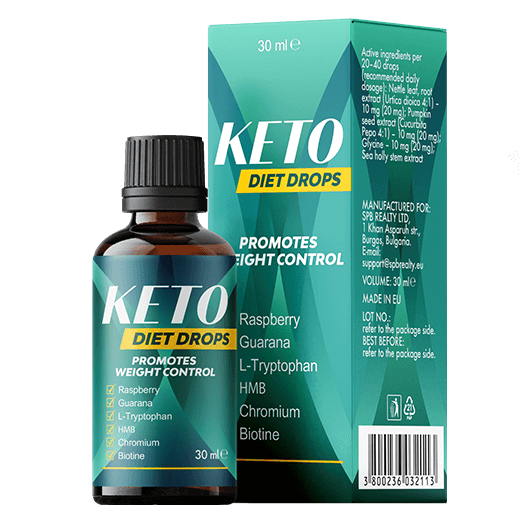
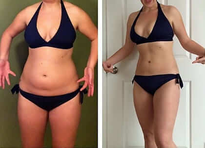
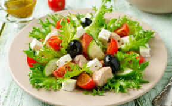

Dieta Keto fără restricții. Cum este posibil
acest lucru?
Modă
5 COMENTARII
PARTAJEAZĂ
5
O tendință populară sau o tehnică eficientă? Ce este de fapt
dieta Keto?
Editorul nostru curajos, Natalia Coman, a verificat toate
aspectele acestei metode de a slăbi, a identificat avantajele
și dezavantajele și a descoperit cum poate fi făcută dieta
Keto mai eficientă.
Obiectiv: să dea jos greutatea în exces în două
luni
Rezultat: minus 17 kg fără edeme și vergeturi

Am decis să împușc doi iepuri dintr-o lovitură - să slăbesc
înainte de vară și să scriu un articol deosebit.
Deci, ce este de fapt dieta Keto?
Este o dietă cu cantitate mică de carbohidrați, cu grăsimi și
cantități moderate de proteine.
Mai simplu spus, poți mânca alimentele tale preferate,
delicioase!
Fără dulciuri, produse de patiserie sau cartofi. Fast-foodul
devine dușmanul tău nr. 1. În schimb, poți mânca multă carne,
lucru pe care vei începe să-l urăști din a treia zi de dietă.
Carbohidrații sunt sursa de energie pentru corp.
Atunci când lipsesc din corp, acesta începe să ardă propria
grăsime pentru a obține energie.
Acest lucru se numește cetoză. Țesutul proteic rămâne intact
și mușchii rămân la fel. Cum a fost experiența mea?
Am încetat să mai consum dulciuri și produse de patiserie.
Dieta mea a inclus carne, brânză, brânză de vaci, anumite
legume și ouă.
Sună bine, dar am început să simt lipsa carbohidraților după
doar trei zile.
Îmi era greu să mă trezesc dimineața. Nu aveam deloc energie.
Chiar și creierul meu funcționa mai lent ca înainte.
Am slăbit 4,5 kg într-o săptămână, ceea ce a fost un
rezultat bun. Dar am început să am probleme cu rinichii.
Aceștia pur și simplu nu puteau procesa cantitățile uriașe
de proteine pe care le consumam în loc de carbohidrați.
Am fost foarte speriată și am decis să mă opresc.
Articolul meu era așteptat luna următoare și eu eșuasem cu
experimentul. Pentru a face față situației, am sunat o
prietenă, care este dietetician.
Ea mi-a spus despre produsul care ar putea să mă ajute în
dieta mea.
Keto Diet
- este o picătură care conține cetone de zmeură, guarana și vitamina B6.
Aceste componente ajută organele interne să se acomodeze
cu noua dietă și îmbunătățesc funcționarea creierului în
timpul cetozei.
Vitaminele și mineralele îmbunătățesc rezistența și reduc
oboseala. Însă cel mai important lucru este că utilizarea
Keto Diet
îți permite să consumi carbohidrați.
Consumă mâncărurile tale preferate și slăbește!
Cu moderație, desigur.


а
Pot spune cu certitudine că experimentul meu a fost reușit. Am
slăbit și mi-am reînnoit garderoba. Acum port rochii mulate,
pantaloni strâmți și fuste mini, deoarece noua siluetă îmi
permite acest lucru. Și voi slăbi și mai mult înainte de vară.
Celor care au încercat să slăbească cu ajutorul dietei Keto
sau plănuiesc să facă acest lucru, le recomand cu toată
încrederea
Keto Diet. Efectul va fi mult mai vizibil, iar corpul tău va fi mai
sănătos. Cu toate acestea, nu ar trebui consumat în exces,
deoarece corpul ar putea începe să ardă prea rapid grăsimea,
ducând în cele din urmă la anorexie.
Vă doresc tuturor baftă și un corp suplu!
Comentarii:
Maria
Am reușit să urmez dieta Keto doar două zile. E foarte greu
să trăiești fără carbohidrați. Și exercițiile fizice sunt în
afara discuției. Această dietă nu e pentru mine.
răspunde
Bianca
Keto Diet
este un produs minunat! M-a ajutat să slăbesc 12 kg în 2
săptămâni! Nu am renunțat la nimic. Doar că am consumat mai
puține produse de patiserie. Noua mea greutate rămâne
neschimbată.

răspunde
Diana
Am auzit multe despre această dietă, dar nu am încercat-o
niciodată. Știu că multe vedete de la Hollywood o utilizează
pentru a slăbi. Kardashian și alții. Poate că folosesc și
Keto Diet.
răspunde
Barbie04
Am folosit
Keto Diet
pentru a slăbi după sarcină. Inițial, am încercat doar dieta
Keto, dar nu a funcționat pentru mine. Oboseam foarte tare
și nu puteam să am grijă de bebeluș așa cum trebuie. Când am
încercat
Keto Diet, am început să am mai multă energie. Am renunțat la
dulciuri, dar m-am obișnuit rapid cu asta. Am slăbit 15 kg,
deci nu ezitați să încercați.
răspunde
CELE MAI NOI POSTĂRI

10 dintre cele mai eficiente diete pentru slăbire rapidă
Pentru a te face geloasă: 6 zile din viața unui editor la o
revistă pentru femei (și a asistentei sale personale)
Horoscopul femeilor de succes din 28 ianuarie până în 3
februarie
Povestea mea despre slăbit. Sigur și foarte eficient
ETICHETE POPULARE
sfaturi
idei
inspirație
modern
motivație
sfaturi și trucuri
tutoriale
plimbări
Keto Diet @copyright 2020